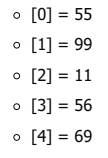
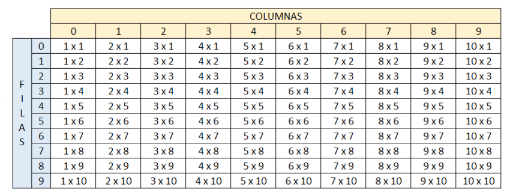

Arreglos
-
Crear un vector de tipo Entero con 5 posiciones, llenarlo con información solicitada al usuario. Después de recoger toda
información, se requiere imprimir el índice de cada posición en el arreglo con su valor de la siguiente manera:

Códigos de la solución
Pseint
Proceso Punto_1 Definir vector, i Como Entero; Dimension vector[5]; // Llenado del vector Para i <- 0 Hasta 4 Con Paso 1 Hacer Escribir "Escriba el número para la posicion ", i; Leer vector[i]; FinPara // Imprimir la información ingresada Limpiar Pantalla; Para i<- 0 Hasta 4 Con Paso 1 Hacer Escribir "[",i,"] = ", vector[i]; FinPara FinProcesoJava
public class Main { public static void main(String[] args) { ArregloUsuario arreglo = new ArregloUsuario(); arreglo.asignarValores(); System.out.println("Impresión de los valores del arreglo:"); arreglo.imprimirArreglo(); } } import java.util.Scanner; public class ArregloUsuario { //creación del arreglo de 5 posiciones private int[] arreglo = new int[5]; //Método para asignar valores al arreglo por teclado. public void asignarValores(){ Scanner input = new Scanner(System.in); for (int i = 0; i < this.arreglo.length; i++){ System.out.println("Escriba el número para la posición " + i); this.arreglo[i] = input.nextInt(); } } public void imprimirArreglo(){ for (int i = 0; i < this.arreglo.length; i++){ System.out.println("[" + i + "] = " + this.arreglo[i]); } } } -
Crear un arreglo de números enteros de 20 posiciones, el cual, debe ser llenado con números aleatorios entre 1 y 100; despué
de haber llenado dicho arreglo, se debe volver a recorrer utilizando un ciclo diferente al que se usó para llenarse e imprimir lo
números pares e impares. Ejemplo

Códigos de la solución
Pseint
Proceso Punto_2 Definir nums, i, j Como Entero; Dimension nums[20]; // llenado del arreglo Para i<-0 Hasta 19 Con Paso 1 Hacer nums[i] <- Azar(100)+1; FinPara i <- 0; j <- 0; // Imprimir los números pares Escribir Sin Saltar "Números pares: "; Mientras i < 20 Hacer Si nums[i] % 2 = 0 Entonces Si j <> 0 Entonces Escribir Sin Saltar ", "; FinSi Escribir Sin Saltar nums[i]; j <- j+1; FinSi i <- i+1; FinMientras Escribir ""; // imprimir números impares i <- 0; j <- 0; Escribir Sin Saltar"Números impares: "; Mientras i < 20 Hacer Si nums[i] % 2 <> 0 Entonces Si j<>0 Entonces Escribir Sin Saltar ", "; FinSi Escribir Sin Saltar nums[i],", "; FinSi i <- i+1; FinMientras FinProcesoJava
public class Main { public static void main(String[] args) { ArregloAleatorios arreglo = new ArregloAleatorios(); arreglo.generarNumerosAleatorios(); System.out.print("Números pares: "); arreglo.imprimirPares(); System.out.println(""); System.out.print("Números impares: "); arreglo.imprimirImpares(); } } public class ArregloAleatorios { private int[] arreglo = new int[20]; //Método para llenar arreglo con números aleatorios. public void generarNumerosAleatorios(){ for (int i = 0; i < this.arreglo.length; i++){ this.arreglo[i] = (int) (Math.random() * 100) + 1; } } //Método para imprimir números pares public void imprimirPares(){ int contador; contador = 0; for (int i = 0; i < this.arreglo.length; i++){ if (this.arreglo[i] % 2 == 0){ if(contador > 0){ System.out.print(", " + this.arreglo[i]); }else { System.out.print(this.arreglo[i]); } contador++; } } } //Método para imprimir números impares. public void imprimirImpares(){ int contador; contador = 0; for (int i = 0; i < this.arreglo.length; i++){ if (this.arreglo[i] % 2 != 0){ if(contador > 0){ System.out.print(", " + this.arreglo[i]); }else { System.out.print(this.arreglo[i]); } contador++; } } } } -
Imprimir los números primos del 1 al 1000, el resultado debe ser buscado
de forma matemática.
Códigos de la solución
Pseint
Proceso Punto_3 Definir primos, posicion, divisor, i Como Entero; Dimension primos[168]; posicion <- 0; // llenar arreglo con números primos entre 1 y 1000 Para i <- 0 Hasta 1000 Con paso 1 Hacer divisor <- 2; Mientras divisor <= i Hacer Si i % divisor = 0 Entonces Si i = divisor Entonces primos[posicion] <- i; posicion <- posicion + 1; FinSi divisor <- i + 1; SiNo divisor <- divisor + 1; FinSi FinMientras FinPara // Imprimir los números primos almacenados en el arreglo Escribir "**** Números primos entre 1 y 1000 ****"; Para i <- 0 Hasta 167 Con Paso 1 Hacer Si i % 23 <> 0 O i = 0 Entonces Escribir Sin Saltar "|", primos[i],"|"; SiNo Escribir "|", primos[i], "|"; FinSi FinPara FinProcesoJava
public class Main { public static void main(String[] args) { NumerosPrimos numerosPrimos = new NumerosPrimos(); for (int i = 2; i <= 1000; i++){ numerosPrimos.buscarNumerosPrimos(i); } System.out.println("**** Números primos entre 1 y 1000 ****"); numerosPrimos.imprimirNumerosPrimos(); } } public class NumerosPrimos { private final int[] primos = new int[168]; private int posicion; public NumerosPrimos(){ this.posicion = 0; } //Método para almacenar los números que sean primos en el rango 1-1000 public void buscarNumerosPrimos(int numero){ for (int i = 2; i <= numero; i++){ if(numero % i == 0){ if(numero == i){ this.primos[posicion] = numero; this.posicion++; }else { break; // termina el ciclo cuando no es primo. } } } } // Método para imprimir los número primos guardados en el arreglo. public void imprimirNumerosPrimos(){ int finFila = 23; for (int i = 0; i < this.primos.length; i++){ if ((i % finFila == 0) && (i != 0)){ if(this.primos[i] < 100){ System.out.println("| " + this.primos[i] + "|"); }else { System.out.println("|" + this.primos[i] + "|"); } finFila += 24; }else { if(this.primos[i] < 100){ if (this.primos[i] < 10){ System.out.print("| " + this.primos[i] + " |"); }else { System.out.print("| " + this.primos[i] + "|"); } }else { System.out.print("|" + this.primos[i] + "|"); } } } } } -
Dada la siguiente matriz bidimensional, el cual debe de quemar en el código.
Utilizando el conocimiento adquirido, a excepción de hacerlo de forma manual, imprima la siguiente matriz bidimensional.


Códigos de la solución
Pseint
Proceso Punto_4 Definir matriz, fila, columna, num Como Entero; Dimension matriz[4,5]; num <- 1; // llenado del arreglo y impresión de la matriz inicial Escribir "Matriz dada: "; Para fila <- 0 Hasta 3 Con Paso 1 Hacer Para columna <- 0 Hasta 4 Hacer Si num < 10 Entonces Si columna <> 4 Entonces Escribir Sin Saltar "0", num, " "; matriz[fila,columna] <- num; SiNo Escribir "0", num; matriz[fila,columna] <- num; FinSi SiNo Si columna <> 4 Entonces Escribir Sin Saltar num, " "; matriz[fila,columna] <- num; SiNo Escribir num; matriz[fila,columna] <- num; FinSi FinSi num <- num + 1; FinPara FinPara // Impresión de la matriz con modificación de orden Escribir ""; Escribir "Matriz solicitada:"; Para fila <- 0 Hasta 3 Con Paso 1 Hacer Si fila % 2 = 0 Entonces Para columna <- 0 Hasta 4 Con Paso 1 Hacer Si columna <> 4 Entonces Si matriz[fila, columna] < 10 Entonces Escribir Sin Saltar "0",matriz[fila, columna], " "; SiNo Escribir Sin Saltar matriz[fila, columna], " "; FinSi SiNo Si matriz[fila, columna] < 10 Entonces Escribir "0",matriz[fila, columna], " "; SiNo Escribir matriz[fila, columna]; FinSi FinSi FinPara SiNo Para columna <- 4 Hasta 0 Con Paso -1 Hacer Si columna <> 0 Entonces Si matriz[fila, columna] < 10 Entonces Escribir Sin Saltar "0",matriz[fila, columna], " "; SiNo Escribir Sin Saltar matriz[fila, columna], " "; FinSi SiNo Si matriz[fila, columna] < 10 Entonces Escribir "0",matriz[fila, columna], " "; SiNo Escribir matriz[fila, columna]; FinSi FinSi FinPara FinSi FinPara FinProcesoJava
public class Main { public static void main(String[] args) { MatrizBidimensional matriz = new MatrizBidimensional(); matriz.llenarMatriz(); System.out.println("Impresión de la matriz solicitada:"); matriz.imprimirOrdenado(); System.out.println("Impresion de la matriz con orden modificado"); matriz.imprimirOrdenMixto(); } } public class MatrizBidimensional { private final String[][] matriz = new String[4][5]; //Método para llenar la matriz con los valores solicitados public void llenarMatriz(){ int contador = 1; for(int i = 0; i < matriz.length; i++){ for (int j = 0; j < matriz[i].length; j++){ if (contador < 10) this.matriz[i][j] = "0" + (contador); else this.matriz[i][j] = String.valueOf(contador); contador ++; } } } //Método para imprimir la matriz ordenada public void imprimirOrdenado(){ for (String[] strings : this.matriz) { for (int j = 0; j < strings.length; j++) { if (j < strings.length - 1) System.out.print(strings[j] + " "); else System.out.println(strings[j]); } } } // Método para imprimir la matriz invirtiendo el orden entre filas pares e impares. public void imprimirOrdenMixto(){ for (int i=0; i < matriz.length; i++){ if(i % 2 != 0){ for(int j = this.matriz[i].length - 1; j >= 0; j--){ if(j == 0) System.out.println(this.matriz[i][j]); else System.out.print(this.matriz[i][j] + " "); } }else { for (int j = 0; j < matriz[i].length; j++){ if(j < matriz[i].length - 1) System.out.print(this.matriz[i][j] + " "); else System.out.println(this.matriz[i][j]); } } } } } -
Se debe de imprimir el siguiente cuadro:
El usuario deberá insertar la fila y columna de la cual desea ver el resultado, el resultado de cada celda debe esta previamente calculado en una matriz bidimensional la cual cada resultado obedecerá a la fila y columna insertada por e usuario.
Códigos de la solución
Pseint
Proceso Punto_5 Definir resultados, fila, columna, opc Como Entero; Dimension resultados[10,10]; opc <- 1; // Calcular los resultados de la tabla Para fila <- 0 Hasta 9 Con Paso 1 Hacer Para columna <- 0 Hasta 9 Con Paso 1 Hacer resultados[fila, columna] <- (fila + 1) * (columna +1); FinPara FinPara // Impresión de la tabla y solicitud de fila y columna del usuario Repetir Limpiar Pantalla; Escribir " | COLUMNAS |"; Escribir " __ __| 0 | 1 | 2 | 3 | 4 | 5 | 6 | 7 | 8 | 9 |"; Escribir "| |0 | 1x1 | 2x1 | 3x1 | 4x1 | 5x1 | 6x1 | 7x1 | 8x1 | 9x1 | 10x1 |"; Escribir "| |1 | 1x2 | 2x2 | 3x2 | 4x2 | 5x2 | 6x2 | 7x2 | 8x2 | 9x2 | 10x2 |"; Escribir "| |2 | 1x3 | 2x3 | 3x3 | 4x3 | 5x3 | 6x3 | 7x3 | 8x3 | 9x3 | 10x3 |"; Escribir "| F|3 | 1x4 | 2x4 | 3x4 | 4x4 | 5x4 | 6x4 | 7x4 | 8x4 | 9x4 | 10x4 |"; Escribir "| I|4 | 1x5 | 2x5 | 3x5 | 4x5 | 5x5 | 6x5 | 7x5 | 8x5 | 9x5 | 10x5 |"; Escribir "| L|5 | 1x6 | 2x6 | 3x6 | 4x6 | 5x6 | 6x6 | 7x6 | 8x6 | 9x6 | 10x6 |"; Escribir "| A|6 | 1x7 | 2x7 | 3x7 | 4x7 | 5x7 | 6x7 | 7x7 | 8x7 | 9x7 | 10x7 |"; Escribir "| S|7 | 1x8 | 2x8 | 3x8 | 4x8 | 5x8 | 6x8 | 7x8 | 8x8 | 9x8 | 10x8 |"; Escribir "| |8 | 1x9 | 2x9 | 3x9 | 4x9 | 5x9 | 6x9 | 7x9 | 8x9 | 9x9 | 10x9 |"; Escribir "| |9 | 1x10 | 2x10 | 3x10 | 4x10 | 5x10 | 6x10 | 7x10 | 8x10 | 9x10 | 10x10 |"; Escribir ""; Escribir "Ingrese la fila: "; Leer fila; Escribir "Ingrese la columna: "; Leer columna; Si (fila > -1 Y fila < 10) Y (columna > -1 Y columna < 10) Entonces Escribir "El resultado en la posicion (",fila,",", columna,") es: ", resultados[fila,columna]; SiNo Escribir "Los valores para la fila y la columna deben estar entre 0 y 9"; FinSi Escribir "Para salir digite 2, para continuar con otra opción oprime enter"; Leer opc; Hasta Que opc = 2 FinProcesoJava
import java.util.Scanner; public class Main { public static void main(String[] args) { int opcion, fila, columna; Scanner input = new Scanner(System.in); TablaDeMultiplicar tabla = new TablaDeMultiplicar(); tabla.llenarTabla(); do { tabla.imprimirTabla();// imprime tabla con las operaciones de cada casilla. //Solicitar fila y columna para obtener el resultado almacenado en esa posicion de la matriz. System.out.print("Ingrese la fila: "); fila = input.nextInt(); System.out.print("Ingrese la columna: "); columna = input.nextInt(); System.out.println(tabla.mostrarResultado(fila, columna)); System.out.println("Para ver otro resultado presione 1, para salir presione 2."); opcion = input.nextInt(); }while (opcion != 2); } } public class TablaDeMultiplicar { private final int[][] multiplicaciones = new int[10][10]; public void imprimirTabla(){ System.out.println(" | COLUMNAS |"); System.out.println(" __ __| 0 | 1 | 2 | 3 | 4 | 5 | 6 | 7 | 8 | 9 |"); System.out.println("| |0 | 1x1 | 2x1 | 3x1 | 4x1 | 5x1 | 6x1 | 7x1 | 8x1 | 9x1 | 10x1 |"); System.out.println("| |1 | 1x2 | 2x2 | 3x2 | 4x2 | 5x2 | 6x2 | 7x2 | 8x2 | 9x2 | 10x2 |"); System.out.println("| |2 | 1x3 | 2x3 | 3x3 | 4x3 | 5x3 | 6x3 | 7x3 | 8x3 | 9x3 | 10x3 |"); System.out.println("| F|3 | 1x4 | 2x4 | 3x4 | 4x4 | 5x4 | 6x4 | 7x4 | 8x4 | 9x4 | 10x4 |"); System.out.println("| I|4 | 1x5 | 2x5 | 3x5 | 4x5 | 5x5 | 6x5 | 7x5 | 8x5 | 9x5 | 10x5 |"); System.out.println("| L|5 | 1x6 | 2x6 | 3x6 | 4x6 | 5x6 | 6x6 | 7x6 | 8x6 | 9x6 | 10x6 |"); System.out.println("| A|6 | 1x7 | 2x7 | 3x7 | 4x7 | 5x7 | 6x7 | 7x7 | 8x7 | 9x7 | 10x7 |"); System.out.println("| S|7 | 1x8 | 2x8 | 3x8 | 4x8 | 5x8 | 6x8 | 7x8 | 8x8 | 9x8 | 10x8 |"); System.out.println("| |8 | 1x9 | 2x9 | 3x9 | 4x9 | 5x9 | 6x9 | 7x9 | 8x9 | 9x9 | 10x9 |"); System.out.println("| |9 | 1x10 | 2x10 | 3x10 | 4x10 | 5x10 | 6x10 | 7x10 | 8x10 | 9x10 | 10x10 |"); } public void llenarTabla(){ for(int i = 0; i < this.multiplicaciones.length; i++ ){ for(int j = 0; j < this.multiplicaciones[i].length; j++){ this.multiplicaciones[i][j] = (i+1) * (j+1); } } } public String mostrarResultado(int fila, int columna){ if(fila <= 9 && columna <= 9){ return "El resultado en la fila " + fila + " y columna " + columna + " es: " + this.multiplicaciones[fila][columna]; }else { return "Los valores para la fila y la columna deben estar entre 0 y 9"; } } }